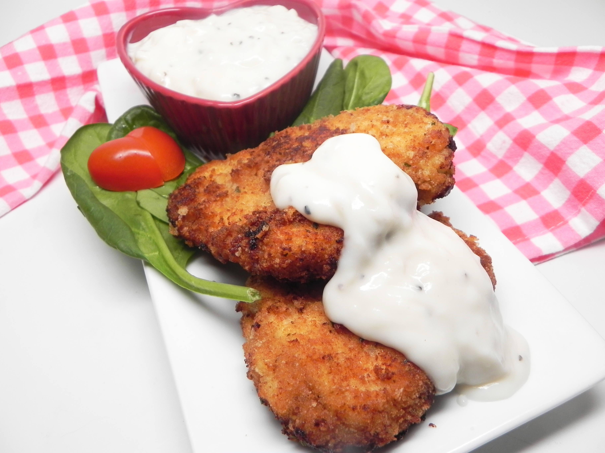

Chicken Cutlet
Back to Recipes

Description
The best chicken cutlet recipe in the entire world (not exaggerating)
Ingredients
- 4 (4 ounce) boneless, skinless chicken breasts, pounded to 1/2-inch thickness
- ½ cup salt
- ½ cup white sugar
- 8 slices crustless bread, torn into large pieces
- ¼ cup dried parsley
- ¾ cup all-purpose flour
- 2 large eggs
- ¾ cup olive oil, divided
- salt and ground black pepper to taste
Instructions
- Preheat oven to 200 degrees F (95 degrees C). Place a large
oven-proof plate on the bottom rack.
- Dissolve salt and sugar in water in a 1-quart casserole dish.
Place chicken in the marinade. Cover and refrigerate for 30 minutes.
- Pat chicken dry and place on a paper towel-lined baking sheet.
Let air-dry for 10 minutes.
- Place bread in a blender or food processor; blend until crumbly,
about 30 seconds. Mix bread crumbs with parsley in a shallow dish.
- Place flour in a shallow dish.
- Beat eggs with 1 tablespoon olive oil in a separate shallow dish.
- Season chicken with salt and pepper. Dredge each cutlet in the flour,
shaking off any excess; dip in the egg mixture and coat evenly in bread crumbs.
- Heat the remaining oil in a nonstick skillet over medium heat.
Add 2 cutlets; cook until golden brown on the outside, no longer
pink in the center, and juices run clear, 2 to 3 minutes per side.
An instant-read thermometer inserted into the center should read at least
165 degrees F (74 degrees C). Remove warmed plate from the oven;
placed cooked cutlets on the plate. Repeat with the remaining chicken.